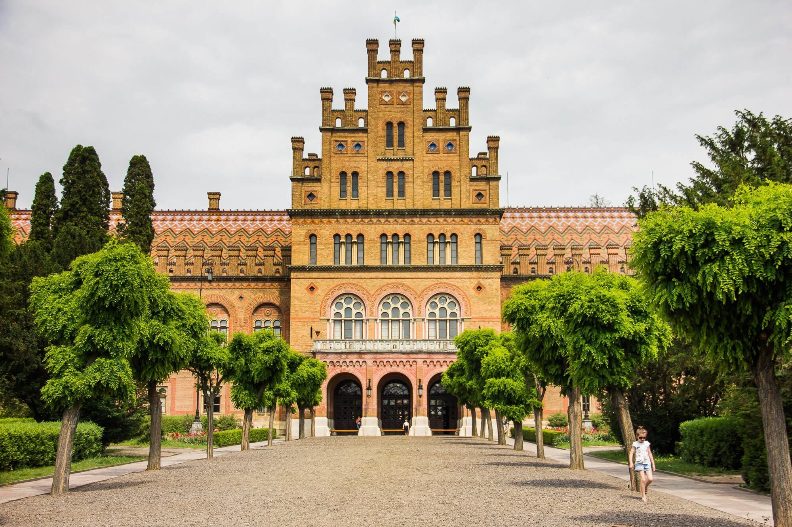
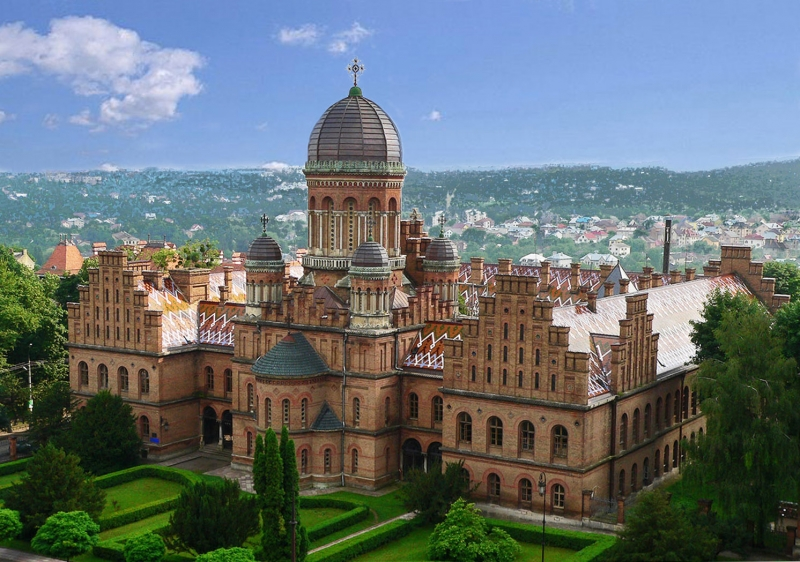
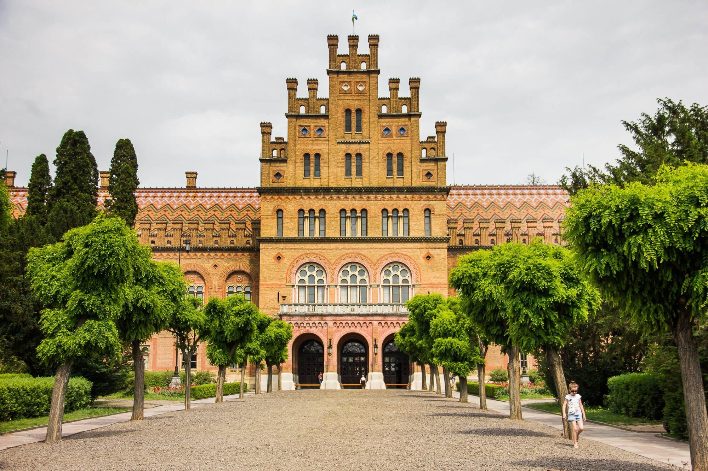
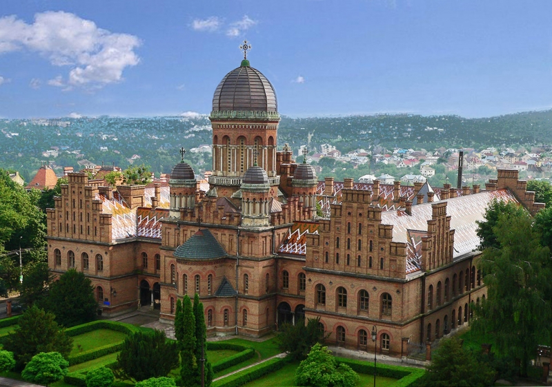

Перлиною Чернівців є величний ансамбль – Резиденція митрополитів Буковини і Далмації, де нині розташований Чернівецький національний університет імені Юрія Федьковича. Ошатна архітектурна споруда, створена у другій половині 19 століття, є символом толерант ності Буковини і її жителів. Цей осередок освіти і духовності краю створили кілька поколінь зодчих, які майстерно втілили архітектурні смаки свого часу. Водночас Резиденція митрополитів – це своєрідний симбіоз стилів і культур, які, переплівшись воєдино, створили неповторний гармонійний союз. Комплекс споруд є пам'яткою архітектури і належить до Списку Всесвітньої спадщини ЮНЕСКО.
Резиденція митрополитів Буковини і Далмації має славного автора. Це чеський архітектор і меценат Йозеф Главка. За його проектами побудовано низку архітектурних шедеврів у Чехії та інших європейських країнах. Хоча австрійська влада дала дозвіл на зведення в Чернівцях кафедрального собору та єпископської резиденції на прохання місцевої православної знаті значно раніше, втілили в життя задум лише через півстоліття, з появою єпископа Євгена Гакмана.
У липні 1864 року новозбудований кафедральний собор освятили, а на місці старої резиденції єпископ Гакман заклав «угольний» (наріжний) камінь у фундамент каплиці святого Івана Сучавського. Цю дату вважають початком зведення нової резиденції. За масштабами будівництво не мало аналогів і коштувало астрономічних на той час грошей – 1,75 мільйона гульденів.
Після того, як Буковинське єпископство 1873 року отримало статус митрополії, за спорудою закріпилася назва, яка дійшла до нашого часу – Резиденція митрополитів або Митрополича резиденція.
Комплекс споруд Чернівецького університету схожий на середньовічний замок. Збудований у дусі еклектики, він є яскравим зразком постромантичних тенденцій в архітектурі. Високі цегляні стіни, оздоблені різьбленим каменем, стрункі вежі. Круті схили дахів, критих різнокольоровою черепицею з візерунками, що відтворюють рисунок буковинських народних килимів – все це додає ансамблю піднесеності і святковості.
 


